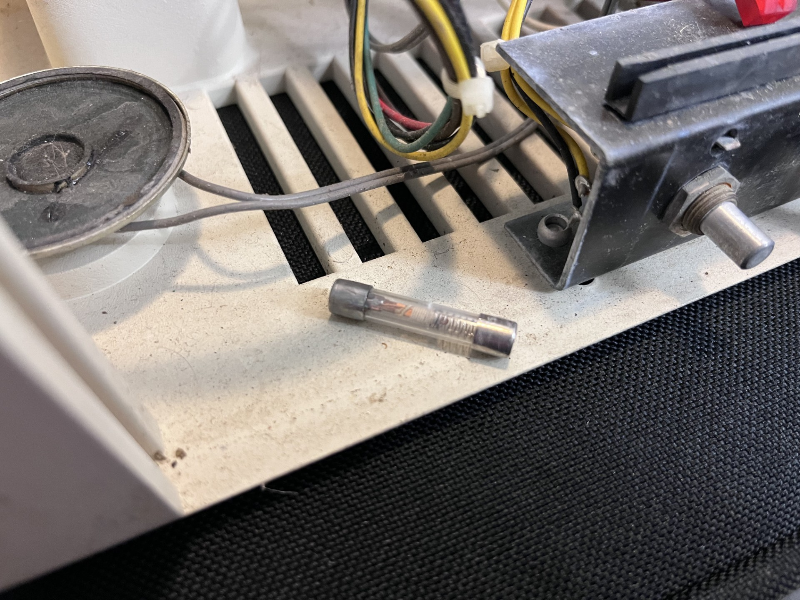
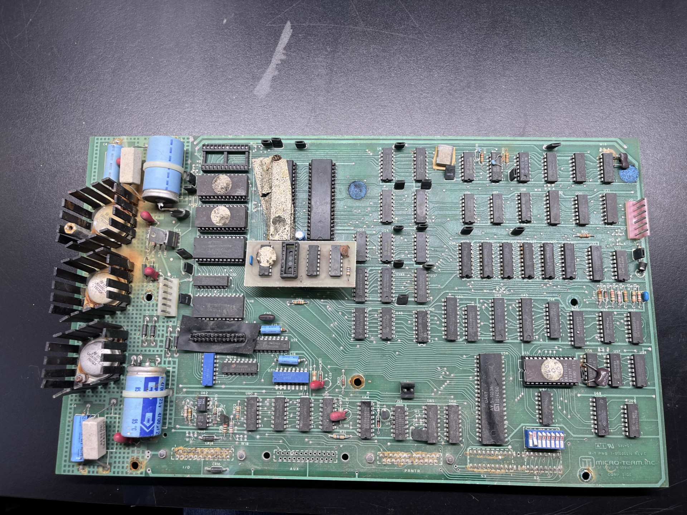
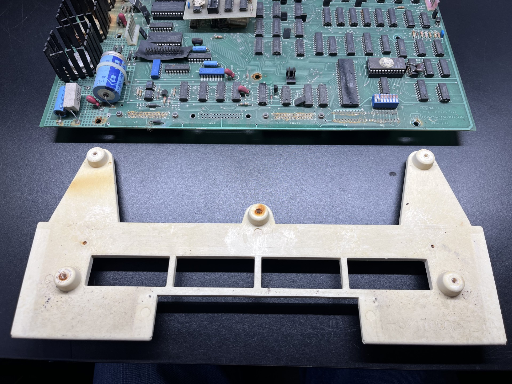
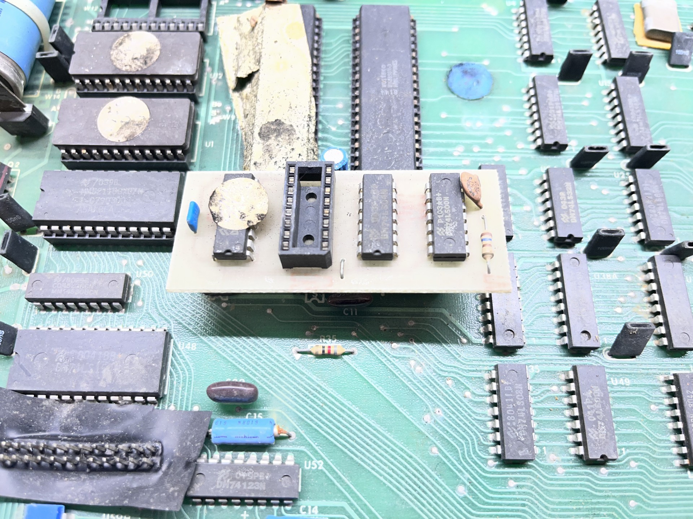
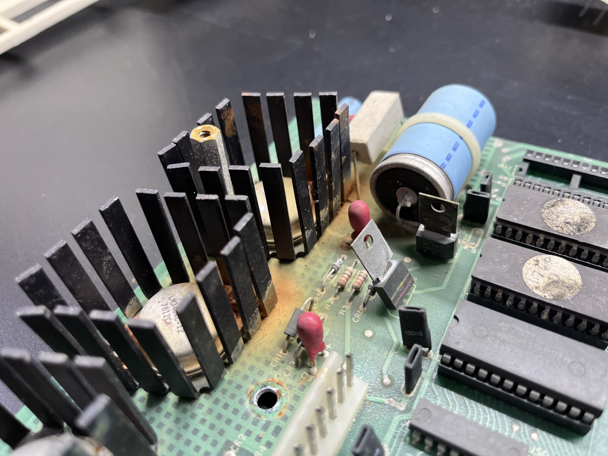
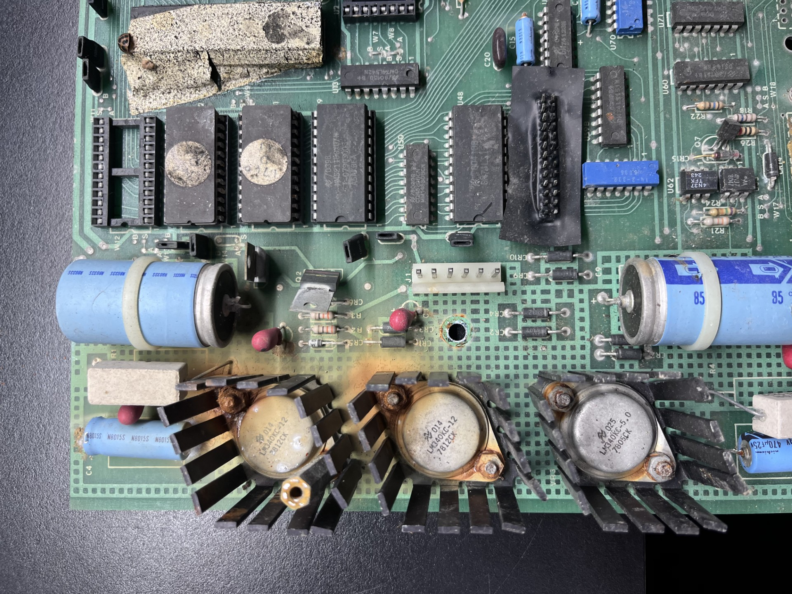
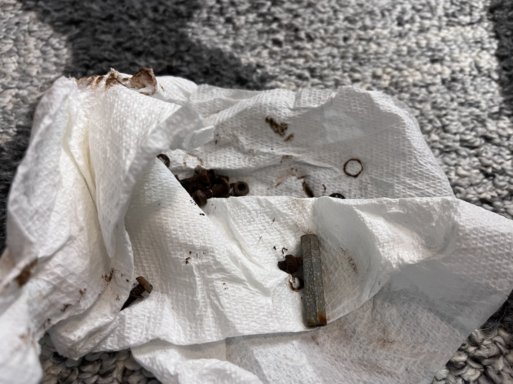
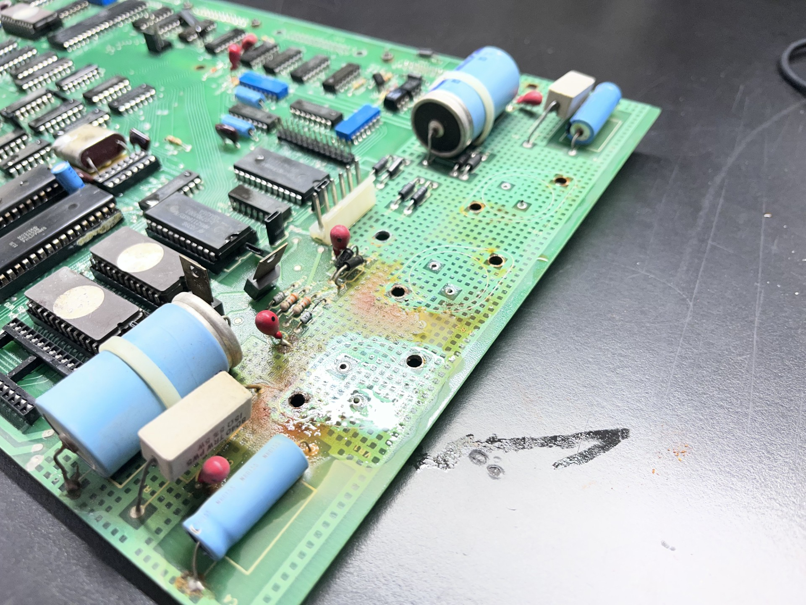
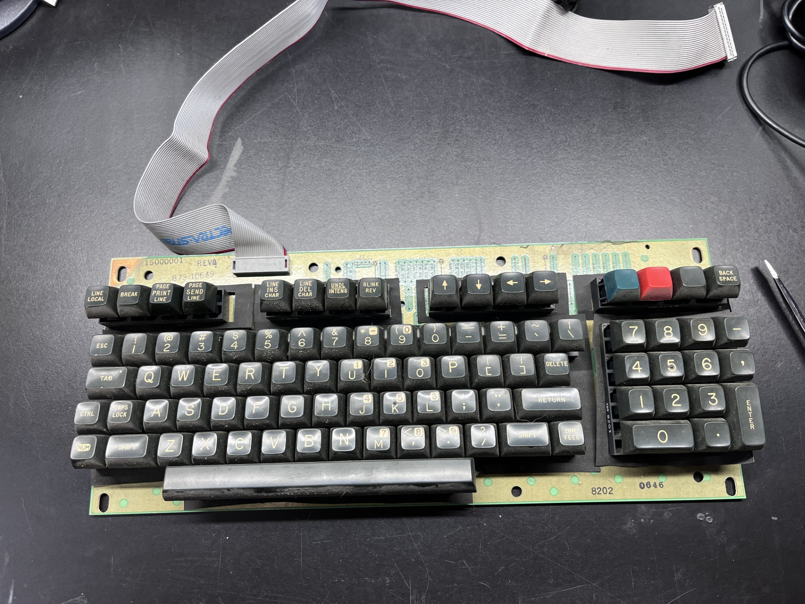

MIME 2A Terminal [Part 3] Electronics Cleaning
Last I posted I was still in class, and finals week was approaching. As a result, I rushed getting those initial posts uploaded and I did not go as in depth as I would have hoped to. I was a little scattered in my telling of the repair process, so I will try to slow down and document my findings, process, and repairs herein out.
This post will be focused on an entirely different terminal and I will be simply cleaning the dirty and rusting electronic hardware, so I will not be powering anything on in this post. Out of the three terminals I bought a few weeks ago, this one was the most complete (it had the analog video driver board) and the chasis on this terminal was not corroded at all. I first checked the fuse and found this:

While I admittedly have not used fuses all too much, this particular fuse looks like someone tried to fix a blown fuse with a bar of copper and a spring. I don't like this and will be replacing this fuse when I get around to powering this terminal.

This is the only logic board in the entire system, and I will be referring to this as the mainboard. After removing three connectors (keyboard data, analog video, and power) as well as the grounding strap that connects the keyboard's ground to the mainboard's ground, the entire mainboard slides out of the rear of the terminal casing. In this photo I've removed the plastic bracket that holds the mainboard and allows it to sit within the entire terminal case.

Here is that bracket that retains the mainboard inside the case. It screws into the mainboard using 5 screws, all of which were extremely rusted. All the screws in this terminal are rusted through and will be replaced when I eventually reassemble everything.

You may have noticed this strange daughterboard that is connected to the mainboard. I do not know what this is at the moment, but later on I will try to touch on what this is. It is located near the crystal oscillator, and I suspect this may be a crude clock divider (maybe MicroTerm had a surplus of higher clock crystal oscilaltors?). The main board and this daughterboard will be cleaned in a soapy bath and will be given a good scrubbing.

While I have not looked too deep into it, I believe this computer uses a very simple transformer + diode recitifer circuit to create some DC voltage (24V?) that then goes through these three voltage regulators. Two 7812's and a 7805, producing the 12V and 5V respectively. Since this is an older comptuer and nearly 45 years old, I think it is fair to give this design a pass. But it is horribly inefficient and produces so much energy released as heat that these regulators require passive heatsinks. While I would love to improve this design, I do not feel confident in my power design and have a greater background in embedded hardware, so I will not be messing with this for now.

Here is a slightly better photo of voltage regulators. These heatsinks as well as the metal casing of the regulators are corroded and need to be removed for proper cleaning. Here is the affected area with the regulators desoldered.

I will need to replace these parts, but given their age I am not sure I will be able to find suitable replacement.

All the screws that held the heatsinks were rusted through. It feels so good throwing these in the garbage.

Now with the affected area cleaned somewhat. The rust is very deeply embedded into the PCB. This may need more washes, perhaps I will go at it harder once I replace the large (filter?) capacitors. These are the larger blue capacitors you can see in the photo with the zip ties holding them in place. Next to them are some fairly high wattage resistors and a smaller capacitor. I am not very familiar with older power electronics design, so I cannot comment on why the large resistors are there.

And finally, the keyboard. I will be trying to create a drop-in replacement for this keyboard so I can use modern mechanical switches with this terminal. This keyboard assembly was made by HI-TEK and uses stackpull switches, which are terrible for typing. They are stiff and crap, I HATE them. HATE them so much I am going to be designing my own PCB. It looks all passive and there are zero ICs or diodes etc on the entire board, so hopefully it will be easier.
As I wait for everything to dry, I will be focusing on actual repairs for my next blog post. I've glanced at the mainbaord and can already see a burnt resistor and a cracked decoupling capcaitors, these will be replaced. I will try to get this published soon, and this summer I will have more time to mess around with this stuff so I am not too worried.